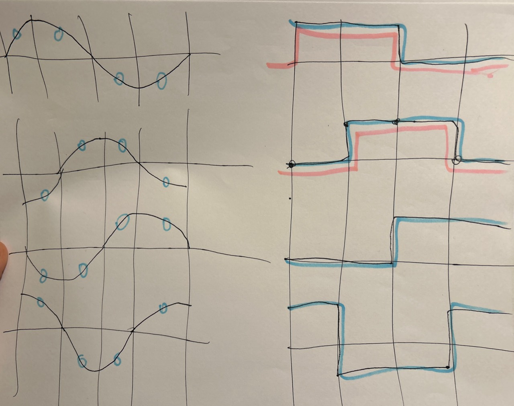
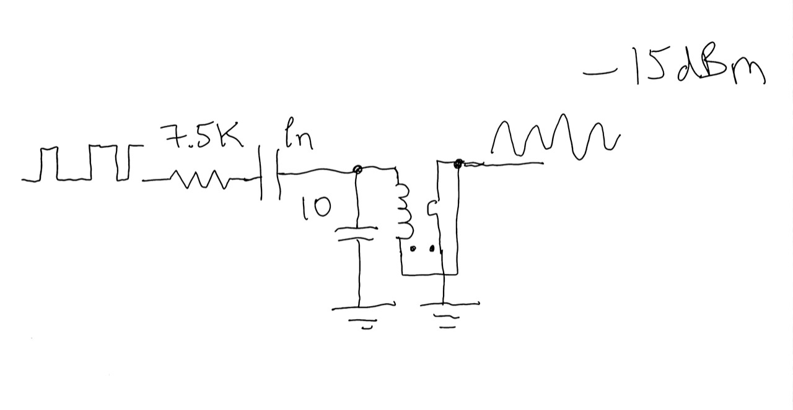
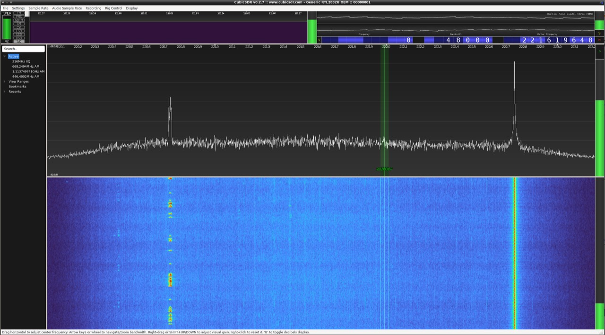

Start With The Source
The selected file is one-pin-RF/ptc_nov21/mod_apr20.sv. The adjacent build script, HX8K constraints, and nextpnr timing declarations preserve the intended Yosys, nextpnr, IceStorm, and iceprog path.
If source files, constraints, timing declarations, and bitstreams are unfamiliar roles, start with the open iCE40 toolchain chapter before reading this preserved build as evidence.
This is historical source, not a reconstructed release. Read it for the implemented signal path; do not treat the presence of a build script as a fresh successful build log.
Four Carrier Phases
The source names two PLL outputs pll_216mhz and pll_216mhz_90. Their complements supply the other two phases. The final selector therefore has four phase choices:
wire p1 = pll_216mhz;
wire p2 = pll_216mhz_90;
wire p3 = ~pll_216mhz;
wire p4 = ~pll_216mhz_90;
assign MODULATED_RF_OUT = rfI ? (
rfQ ? p1 : p4
) : (
rfQ ? p2 : p3
);The I/Q control pair is not multiplied by a sine table. It directly chooses which phase reaches the output stage.

Two Sigma-Delta Control Paths
Two sawtooth states move in opposite directions. Each feeds a one-bit accumulator/quantizer path, producing dac_out and dac_outQ. Johnson-counter phases are XORed into those bits before the four-way phase selector.
sawtooth <= sawtooth - 32'd148000;
sawtoothQ <= sawtoothQ + 32'd148000;
wire rfI = dac_out ^ j_0[0];
wire rfQ = dac_outQ ^ j_0[1];The useful idea is compact: two density-coded control streams become a phase trajectory at RF. The source contains that path directly, even though the preserved snapshot still needs repair before a fresh build can be claimed.
The One-Pin Output Boundary
RF_OUT is mapped to N16 in the HX8K CT256 constraint file. The source does not drive it as an ordinary push-pull data assignment. An SB_IO primitive holds the data side high and applies MODULATED_RF_OUT to OUTPUT_ENABLE, using the pMOS side as the switched RF boundary.
SB_IO #(
.PIN_TYPE(6'b101000),
.IO_STANDARD("SB_LVCMOS"),
.PULLUP(1'b0)
) ddr_io_1 (
.PACKAGE_PIN(RF_OUT),
.D_OUT_0(1'b1),
.OUTPUT_ENABLE(MODULATED_RF_OUT)
);That pin is the digital/physical handoff. The FPGA chooses phase; the external network supplies the narrowband electrical behavior.
The Resonant-Tank Experiment

The resonant network is not decoration. In the reported bench setup, the one-pin FPGA output was coupled through an 8.5 kΩ resistor into the local resonant tank. A phase-switched digital pin produces edges and harmonics; the tuned physical network is the boundary that favors a narrow RF region and couples energy onward. Loaded Q, impedance transformation, insertion loss, and output power still need a documented repeat measurement.
Historical Spectrum Context

The screen is not evidence from the one-pin FPGA receiver. CubicSDR and the RTL-SDR Blog V4 are the observation instrument here: they receive the local tank-coupled FPGA signal and the live PTC signal in the same view. The local signal's sawtooth-like spectral shape is the comparison of interest. The capture does not record a calibrated amplitude reference, RBW/VBW, receiver gain, coupling loss, or a complete fixture description, so it cannot establish absolute output power, occupied bandwidth, harmonic performance, or compliance. Those measurements should be repeated from a named build and fixture.
Fresh-Build Boundary
The archived build command targets --hx8k --package ct256, but the selected source is not presently a clean reproduction package. It contains an unresolved n in two sample-shift ranges, procedural assignments to quantizer signals declared as wires, an undeclared clock source in the broader combined design, and transmitter registers without explicit initialization. The timing file also contains conflicting declarations for CLK_21_MHZ.
A trustworthy rebuild should first isolate the transmitter from the receiver-era code, repair those source boundaries, synthesize without --ignore-loops if possible, and publish the complete Yosys/nextpnr reports with the resulting bitstream hash. Then the RF measurements can name the exact image under test.
Why This Transmitter Matters
The design compresses a recognizable quadrature transmitter boundary into FPGA primitives and one physical output: two one-bit control streams, four clock phases, one phase selector, one switched pin, and one resonant network.
That is useful beyond this particular snapshot. It shows a route from digital modulation state to RF phase without inserting a conventional external I/Q modulator between the FPGA and the tuned output network.